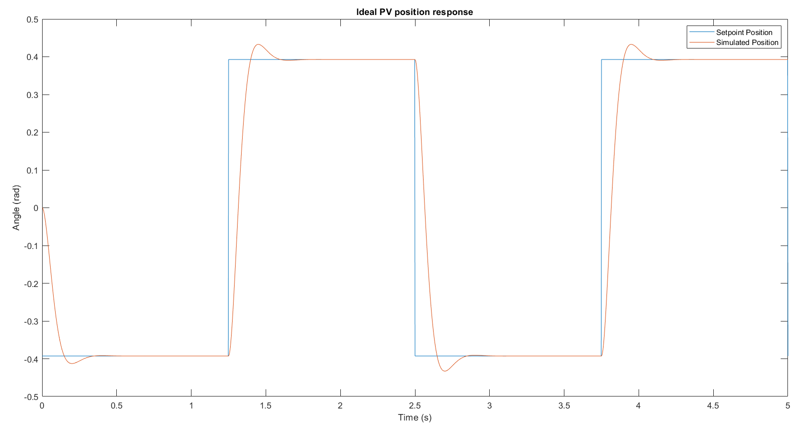
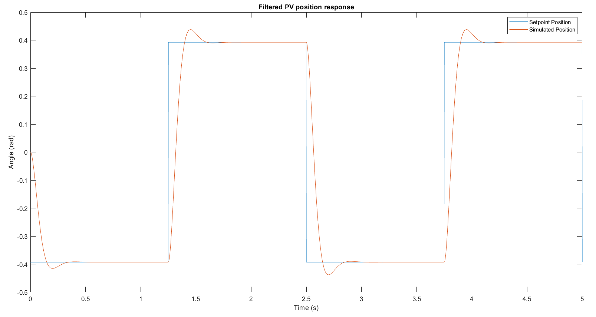
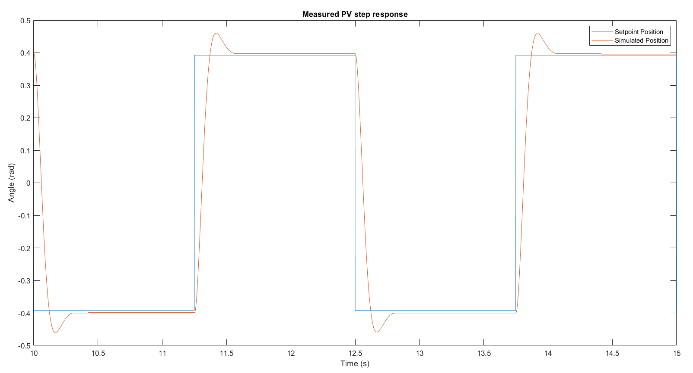
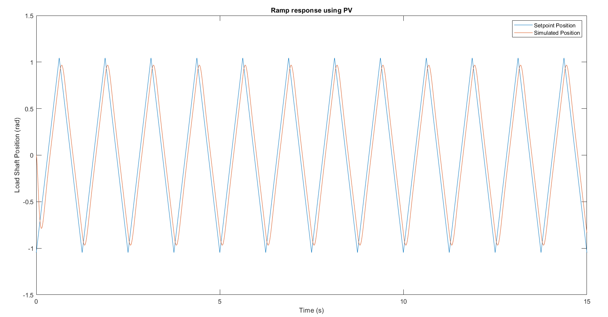
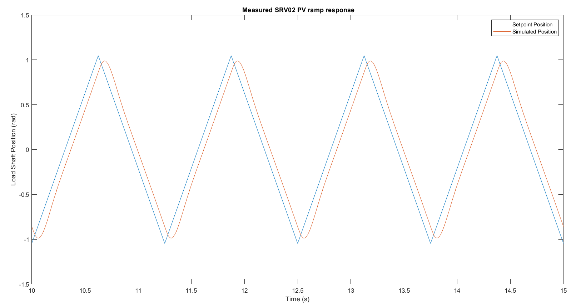
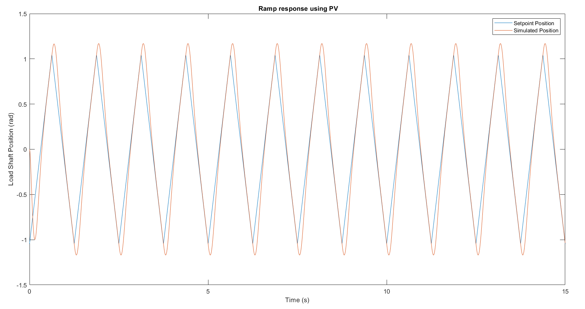
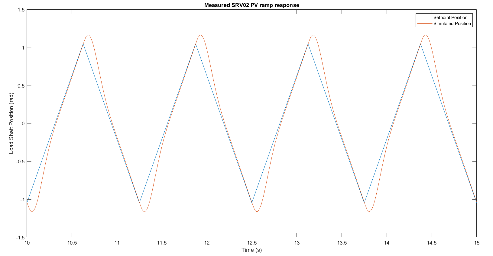

AE 443 · Experimental Dynamics and Control Laboratory · Spring 2026 · ERAU
Position control is fundamental to flight control actuators, robotic arms, gimbal systems, and telescope pointing mechanisms. The challenge is achieving a fast, accurate step response while also tracking continuously-changing reference inputs (like a ramp command) without accumulating position error. This lab designed and implemented a PV controller meeting second-order transient specifications, then demonstrated why adding an integral term is necessary to eliminate the persistent error that appears when the system must track a ramp reference.



The desired transient specs (tp = 0.20 s, PO = 5%) were mapped to second-order system parameters: ζ = 0.69 and ωn = 21.7 rad/s. The PV gains were then derived analytically:
kp = τωn² / K = 7.82 V/rad
kv = (2ζωnτ − 1) / K = −0.157 V·s/rad
Since a PV controller makes the position loop a Type-1 system, a ramp input produces a predictable non-zero steady-state error ess = R(1 + Kkv) / (Kkp) = 0.214 rad. Adding an integral gain ki = 38.9 V/(rad·s) upgraded the controller to PIV, eliminating this error by continuously accumulating and correcting residual position deviation.



| Test | tp (s) | PO (%) | ess (rad) |
|---|---|---|---|
| Step sim (PV) | 0.194 | 5.0 | 0 |
| Step impl (PV) | 0.170 | 7.86 | 0.004 |
| Ramp sim (PV) | — | — | 0.213 |
| Ramp impl (PV) | — | — | 0.186 |
| Ramp sim (PIV) | — | — | 0.005 |
| Ramp impl (PIV) | — | — | 0.007 |
